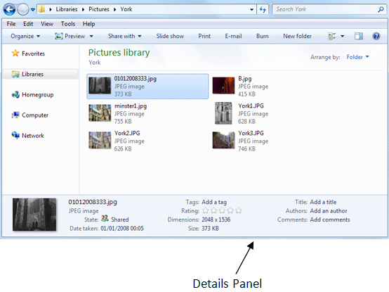
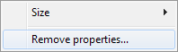
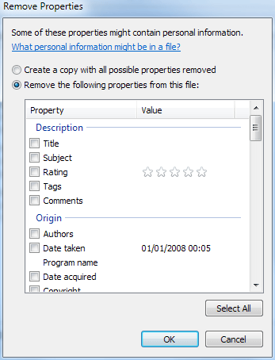
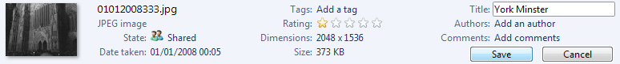
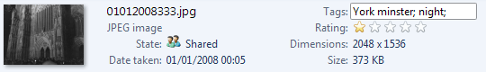

Free
computer Tutorials
|
Free
computer Tutorials
|
|
 back back |
Stay at Home and Learn | ||||
Adding Information to an ImageWindows 7 lets you add lots of information to an image. In this section, you'll learn how to do this. (If you haven't yet created a new folder and moved some images to it, then we did this in the last section.)
To add information to an image, you need to be able to see the Details panel at the bottom:  (If you can't see this, click the Organise button at the top. From the menu, select Layout > Details pane.) With the details pane showing, select an image in your folder. You should then see the details for that picture, as in the image above. The information about the selected image is shown on the pane. However, this information can be retried by others, if you give them a copy of the picture. If you want to remove image information, right click on the Details pane to see the following menu:  The Size is how many items can fit onto the Details pane. The values are Small, Medium, and Large. Click each one in turn and see what they do. But click the Remove properties option to see the following dialogue box:  Scroll down to see what properties are recorded about the image. There's an awful lot! If you don't what to share this information with others, tick a box. Once you're happy with your choices, click OK. If you don't want to change anything, just click Cancel.
Rating your ImagesGive the picture a Rating out of 5 by moving your mouse pointer over the stars. Click the score you think your picture deserves. We've given our first image a Rating of 1 out of 5: Once you click on the stars, you should see Save and Cancel buttons appear. Click Save if you're happy with the rating. (You can change it.)
Add a Title to your ImagesTo give your picture a Title, move your mouse just to the right of the word "Title". You should see a black rectangle appear: Click once with you left mouse button to see a text box appear, along with the Save and Cancel buttons again:  Click inside the text box and type a title. Then click the Save button You can add comments and the Author's (photographer) name in the same way:
Adding Tags to ImagesThe Tag section is used for searching. You can add as many Tags as you like. Click inside the Tag area and type a word or two that describes the image: Notice the semi-colon at the end of our "York minster" tag. The semi-colon is used to separate each tag. When you add a second tag, Windows will insert a new semi-colon at the end:  Click the Save button when you've finished typing your
tags. Add information to the other images in the folder.
In the next lesson, you'll see how to use the information you have just added.
Sorting Images in Windows 7 -> |
|||||
|